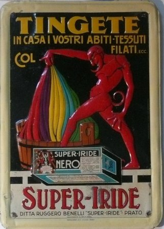

Ma guarda cosa vado a ritrovare a Barumini!
Barumini è un paesello della Sardegna, bello e accogliente come è tutta quella meravigliosa isola, e vi si trova il Museo di Casa Zapata, di evidenti nobili origini spagnole.
La villa, ora in parte museo, è costruita proprio sui ruderi di un nuraghe; del resto lo stesso paese si trova nei pressi di quel patrimonio dell'umanità che è il famoso "Su Nuraxi" (la X si pronuncia come la J in jour).
Nella villa si trova anche una piccola sezione etnografica, con cose e strumenti del mondo contadino.
E cosa ti trovo in un cantuccio?
Alcune di quelle scatolette che rinvenivo da piccolo, abbandonate nel solaio di casa e che non avevo da allora più rivisto... gli originali Super Iride!

Una volta scovate (ma esistono ancora le case col "solaio"...?) quelle scatolette di cartone venivano da un curioso ragazzetto sbudellate per vederci le polverine, che mi entravano nel DNA sotto forma di chimica.
Servivano, in remotissimi tempi molto più ingenui degli attuali, alla tintura in casa delle stoffe; ogni drogheria di paese ne aveva un copioso assortimento, in nome di quell'autarchia domestica che mai e poi mai avrebbe immaginato un futuro dominato dalla famigerata globalizzazione.
---°°°OOO°°°---
Fin dall'ottocento le tinture erano ricavate dal regno animale o estratte da piante (come la robbia), per lo più coltivate in Francia e in Sud America.
L'uso di coloranti naturali si mantenne a lungo, nonostante i nuovi contributi cromatici dell'acido picrico e della mauveina di Perkin, che a metà secolo aprì la strada ai veri coloranti di sintesi (toluidina, fuxina, ecc.).
La Francia, che era stata la culla delle sostanze naturali, perderà la supremazia in questo campo a favore della Germania e della sua nascente industria chimica, pronta all'assalto ed a conquistare il predominio in questo campo con tutta la serie dei coloranti azoici.
A fine secolo i coloranti vegetali erano già definitivamente soppiantati da quelli industriali e l'alizarina di sintesi della BASF aveva preso il posto della robbia della Linguadoca; ancor maggiore successo ebbe la produzione dell'indaco e di altre molecole, tant'è che tutte le grandi società tedesche conosciute ancora oggi derivano da industrie di coloranti: Bayer, Hoechst, BASF, AGFA, ecc.
Ai tempi di mia nonna (gli anni '30) la matassa di lana prodotta e acquistata in loco da qualche allevatore di pecore oppure una pezza di cotone grezzo venivano, alle volte, tinte in casa.
Qui entro nel merito: si tingeva esclusivamente usando un colore in polvere: il vecchio Super Iride della premiata ditta Ruggero Benelli di Prato!
La ditta che faceva "tingere anche le fibre autarchiche" e ancora quella dell'insetticida Super Faust, che "non addormenta... fulmina!", con la sua pompetta a mano in latta col lampo.
Guarda più sotto che una bella etichetta avevano inventata, un rosso diavolo che tiene in mano un arcobaleno!
Grande storia quella della Super Iride della famiglia Benelli; la loro fortuna industriale ebbe inizio proprio con l'invenzione delle tinte per tessuti, alla portata di qualsiasi massaia.
Nella valle del Bisenzio i suoi prodotti venivano adoperati per dare colore alla lana appena tosata o per ravvivare maglioni diventati indefinibili per i troppi lavaggi.
Dopo molti anni di onorata produzione, l'epilogo della Super Iride lo si ebbe con la vendita ad una ditta produttrice di detersivi e poi col trasferimento nel nuovo stabilimento di Calenzano e l'inizio della produzione di carta igienica, tovaglioli e rotoloni da cucina e con l'abbandono della cera, dell'insetticida... e delle tinte.
Adesso della Super Iride originale rimane solo il ricordo di una fabbrica che ha segnato la storia di Prato; anche se esiste ancora il marchio con dei nuovi prodotti, è tutta un'altra cosa.

Cosa c'era dentro quelle scatolette che sbudellavo da piccolo e che ho piacevolmente ritrovato in Sardegna?
Chimicamente non ne ho la più pallida idea... i coloranti sono troppo numerosi per tirarne fuori qualcuno in particolare; ci sarà stato il vero indaco? e la vera alizarina? (quell'azzurrino violaceo ed il giallo me li ricordo bene) ma non oso buttar lì altri nomi senza un solido sostegno che corrobori le mie ipotesi.
A Barumini rimangono le scatolette, a me qualche foto che ho messo sopra.
2 commenti